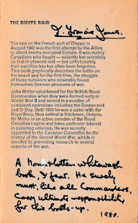
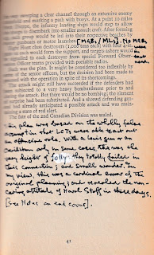

{kind=link}
Jack’s sexuality was central to the person he was. That’s a truism, of course, but for people like Jack who lived more than half their life with their sexuality illegal, the effect was complex. I remember sitting on a beach with my older and much more sophisticated cousin. ‘Do you think it’s true that Uncle Jack’s a Queer?’ she asked suddenly. I can still feel my blank amazement: ‘Yes of course...didn’t you know?’ This was 1968. I was 14, plump and dumb; she was 24 and very beautiful, already the mother of two small children but retaining the aura of fast living and love-ins. We were holidaying in her villa in Menorca. I was there to babysit while she and her handsome son-of-a-baronet husband went out in the evenings and partied. As usual I was out of my depth in her world, but at that moment I realised she simply hadn’t a clue about something I’d known all my life - and that I was the lucky one.
Years later, when Francis (biographer of Tom Driberg) saw the books I had inherited, he recognised them as eloquent of a period when it was still necessary to indicate sexuality by signs, the poetry of Walt Whitman, Giovanni’s Room (1956) by James Baldwin, The Charioteer (1953) by Mary Renault. These were also books to give comfort - Simon Russell Beale celebrated the re-publication of The Charioteer in 2013 by remembering how it had helped him through the AIDS period. Jack's collection included a number of medical books -- it was said he might have liked to have been a doctor, if his education hadn’t been abruptly terminated - but from the scattered annotations it’s also obvious that he was reading to understand why: to challenge any theories that it wasn’t physiologically or psychologically ‘normal’ to be who he was.
At the beginning of WW2 Jack was 26. He was working in Birmingham and beginning to find a deliberately provoking identity as a naval architect. His pseudonymous column in Yachting Monthly was titled ‘You Needn’t Agree…’ then he would use the magazine's letters page to keep a design controversy going for months. ‘What a publicity hound I was in those days!’ he wrote to my mother in old age (letter 1985).
He joined the RNVR in 1941 with little enthusiasm (I’m guessing his employment as an industrial designer may initially have been classed as protected) though with a desire to excel in some way, or at least to stand out. He renamed himself J.F. D’Enefer Jones and those initials appear throughout his navy records. He later claimed to have discovered an ancestor called Felix D’Enefer (spelling varies) and while he may have simply been trying to sound distinctive (we Joneses can feel this as a problem) it's clear that he was playing up the ‘from hell’ (de l’enfer) association.
Perhaps he was resentful at being such a small cog in the vast machine of the navy at war.
John Coldstream’s biography of Dirk Bogarde (with whom Jack was ‘in a relationship’ from 1943) quotes him as explaining: ‘If one’s a good-all-round but otherwise unspectacular officer you're more likely to stay in your rank throughout service life. Get a court of enquiry or better still a court martial for something in which you've been justified... that identifies you, and someone at Admiralty wakes up and notices you... so promotion!’ (DB p 99)
Jack didn’t get court-martialled but claims to have been involved in three Courts of Enquiry. I wish I knew what they were. I’m assuming they’re connected with the early part of his war service which he describes as ’bobbing about the North Sea’ (still with time to write wind-up letters to Yachting Monthly). He was a sub-lieutenant in charge of HMS HDML1024, a Harbour Defence Motor Launch, based in Sheerness at the mouth of the Thames. He is listed under HMS Pembroke IV as part of the minelaying group though I think his work through 1941 would have been more usually connected with night time patrolling and mine-watching as well as general harbour duties. East Coast sailors may be interested to know that he was responsible for escorting the tugs that were towing out and laying the huge concrete cylinders and platform that provided the foundations for Rough’s Tower, the Maunsell fort that was intended to guard Harwich Harbour and the Thames Estuary. As well as being literate, artistic, clever, Jack was also technically expert and true to his origin as the son of an innovative farmer. (My grandfather had died while installing experimental electricity at his farm.) After the war he would became a yacht surveyor as well as a designer; meanwhile he took an interest in the constructions in progress at Tilbury which, he claimed, were the true progenitors of the D-day Mulberry harbours.
Jack was hospitalized for some months following an underwater explosion on HDML1024. Did this event lead to a Court of Enquiry? I don't know. Subsequently he was promoted to Lieutenant and sent to HMS St Christopher in Scotland for training as the commanding officer of an ML - Motor Launch. These were faster vessels, better armed and used for a variety of offensive actions as well as escort and rescue work. I think he was lucky not to be sent with others of his group on Operation Chariot, the St Nazaire raid in March 1942 from which only three of fifteen MLs returned (he may still have been recovering from his earlier injuries): he was, however, unfortunate to be given command of HMS RML 513 (Rescue Motor Launch) and despatched on Operation Jubilee, the Dieppe Raid in August that year. Though Operation Chariot with its shocking percentage losses was counted a success, Jubilee - where 3623 of the 6,086 men who landed were killed, wounded or captured in just 10 hours - was a disaster.
More recent research has uncovered the covert status of the Dieppe raid as an attempted ‘pinch’ raid - one of those operations where almost anything was legitimate in order to acquire code books, rotor wheels and other parts for German enigma machines without it being obvious they had been taken ( Nicholas Rankin Ian Fleming’s Commandos 2011) Historian David O’Keefe links this desperation on behalf of the Naval Intelligence Department with the dreadful period of blackout at Bletchley Park from February to October 1942 when the M4 operating procedure had been introduced on U-boats and losses on Allied convoys were rocketing up in consequence. It would be more than half a century before the problems of Bletchley Park because discussable. Meanwhile there was little comfort for the maimed, the bereaved and the traumatised. After the success of the 1944 Normandy landings Churchill said immediately that without the bravery of those who died at Dieppe and the lessons learned there, this operation would not have been possible. Jack was there, as part of Operation Neptune, but there’s no evidence that this did anything to assuage his bitterness over the conduct of Operation Jubilee.
Among the books I inherited is John Mellor’s The Dieppe Raid (1975). This is written from a Canadian perspective (the overwhelming majority of those who died or were imprisoned were from Canada) but Jack has taken care to record his own view.
 |
| A Mountbatten whitewash book, I fear. He surely must, like all commanders, carry ultimate responsibility for this balls-up |
{kind=link}
.
He has many valid reasons for his anger, not least the apparent expectation that the exposed and vulnerable landing craft -- often little more than open boxes with a single gun - could be sent ahead in an offensive capacity.
 |
| In my view this was a cardinal error of the original planning and revealed the uncaring nature of the Naval staff in those days. |
{kind=link}
As well as the attempted landings and the sea actions there was fighting in the air - about 800 aircraft flying out from England in an attempt to give cover to those waiting at sea. They were at the limits of their fuel supplies so could not linger long as they did battle with the Fockke-Wulfs, Dorniers and Messerschmitts from the French airfields nearby. The main task for HMS RML 513 was to pick up downed airmen, as well as to offer some cover to landing craft attempting to land or evacuate beach under murderous fire. MLs might be much faster, better armed and more manoeuvrable than landing craft but they were also small and wooden, with petrol engines. Two of Jack’s small flotilla were set alight but he and a fellow RML managed to pick up 47 airmen and returned to Newhaven where he was rushed to hospital. 209 holes were counted in RML 513 and Jack had shrapnel through his neck and shoulder. A man who knew him then, tells me he was lashed to the wheel to get home: the account in the Dirk Bogarde book says his blood was bubbling into the ML’s speaking tube. The shrapnel had partially severed his left side cranial nerves and, together with earlier injuries, caused disability and pain for the rest of his life.
It’s hard to assess the effect of chronic pain on a personality. Jack was certainly embittered by its effects, especially as he grew older. I think, though, that what really hurt him was the post-war social attitudes. The period of the early 1950s was an especially harsh time for gays with a spate of persecutions and jailings. ‘No homosexual, however exalted his status could ever feel safe from zealous law enforcers’. (FW Tom Driberg p 193) I wasn’t aware then (b 1954) but later I well remember hearing Jack comment bitterly how ready the state had been to accept his body and the potential sacrifice of his life in war, only to make him, and others like him, legally outcast in peace.
And when you consider the attitudes of the state they had been fighting against, the freedoms they believed they had ben fighting for... those 50s attitudes are very shocking. I'm glad Uncle Jack left me his books: I think I should have demanded the complete collection.
{kind=link}